Extends from Modelica.Icons.Package (Icon for standard packages).
| Name | Description |
|---|---|
| 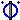 PartialAirGap | Partial airgap model |
| 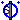 AirGapS | Airgap in stator-fixed coordinate system |
| 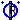 AirGapR | Airgap in rotor-fixed coordinate system |
| Space phasor inductor | |
| 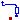 SquirrelCage | Squirrel Cage |
| Squirrel Cage | |
| ElectricalExcitation | Electrical excitation |
| Permanent magnet excitation | |
| Ideal linear electrical inductor for electrical DC machines | |
| 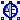 PartialAirGapDC | Partial airgap model of a DC machine |
| AirGapDC | Linear airgap model of a DC machine |
| 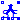 CompoundDCExcitation | Compound excitation = shunt + series |
| Partial model of transformer core with 3 windings | |
| Ideal transformer with 3 windings | |
| Partial model of threephase transformer |

| Type | Name | Default | Description |
|---|---|---|---|
| Integer | m | 3 | Number of phases |
| Integer | p | Number of pole pairs |
| Type | Name | Description |
|---|---|---|
| Flange_a | flange | |
| Flange_a | support | Support at which the reaction torque is acting |
| SpacePhasor | spacePhasor_s | |
| SpacePhasor | spacePhasor_r |
partial model PartialAirGap "Partial airgap model"
parameter Integer m=3 "Number of phases";
parameter Integer p(min=1) "Number of pole pairs";
output Modelica.SIunits.Torque tauElectrical;
Modelica.SIunits.Angle gamma "Rotor displacement angle";
Modelica.SIunits.Current i_ss[2]
"Stator current space phasor with respect to the stator fixed frame";
Modelica.SIunits.Current i_sr[2]
"Stator current space phasor with respect to the rotor fixed frame";
Modelica.SIunits.Current i_rs[2]
"Rotor current space phasor with respect to the stator fixed frame";
Modelica.SIunits.Current i_rr[2]
"Rotor current space phasor with respect to the rotor fixed frame";
Modelica.SIunits.MagneticFlux psi_ms[2]
"Magnetizing flux phasor with respect to the stator fixed frame";
Modelica.SIunits.MagneticFlux psi_mr[2]
"Magnetizing flux phasor with respect to the rotor fixed frame";
Real RotationMatrix[2,2] "Matrix of rotation from rotor to stator";
public
Modelica.Mechanics.Rotational.Interfaces.Flange_a flange;
Modelica.Mechanics.Rotational.Interfaces.Flange_a support
"Support at which the reaction torque is acting";
Machines.Interfaces.SpacePhasor spacePhasor_s;
Machines.Interfaces.SpacePhasor spacePhasor_r;
equation
// mechanical angle of the rotor of an equivalent 2-pole machine
gamma=p*(flange.phi-support.phi);
RotationMatrix={{+cos(gamma),-sin(gamma)},{+sin(gamma),+cos(gamma)}};
i_ss = spacePhasor_s.i_;
i_ss = RotationMatrix*i_sr;
i_rr = spacePhasor_r.i_;
i_rs = RotationMatrix*i_rr;
// Stator voltage induction
spacePhasor_s.v_ = der(psi_ms);
// Rotor voltage induction
spacePhasor_r.v_ = der(psi_mr);
// Electromechanical torque (cross product of current and flux space phasor)
tauElectrical = m/2*p*(spacePhasor_s.i_[2]*psi_ms[1] - spacePhasor_s.i_[1]*psi_ms[2]);
flange.tau = -tauElectrical;
support.tau = tauElectrical;
end PartialAirGap;
Extends from PartialAirGap (Partial airgap model).
| Type | Name | Default | Description |
|---|---|---|---|
| Inductance | Lm | Main field inductance [H] | |
| Integer | m | 3 | Number of phases |
| Integer | p | Number of pole pairs |
| Type | Name | Description |
|---|---|---|
| Flange_a | flange | |
| Flange_a | support | Support at which the reaction torque is acting |
| SpacePhasor | spacePhasor_s | |
| SpacePhasor | spacePhasor_r |
model AirGapS "Airgap in stator-fixed coordinate system"
parameter Modelica.SIunits.Inductance Lm "Main field inductance";
extends PartialAirGap;
Modelica.SIunits.Current i_ms[2]
"Magnetizing current space phasor with respect to the stator fixed frame";
protected
parameter Modelica.SIunits.Inductance L[2,2]={{Lm,0},{0,Lm}}
"Inductance matrix";
equation
// Magnetizing current with respect to the stator reference frame
i_ms = i_ss + i_rs;
// Magnetizing flux linkage with respect to the stator reference frame
psi_ms = L*i_ms;
// Magnetizing flux linkage with respect to the rotor reference frame
psi_mr = transpose(RotationMatrix)*psi_ms;
end AirGapS;
Extends from PartialAirGap (Partial airgap model).
| Type | Name | Default | Description |
|---|---|---|---|
| Inductance | Lmd | Main field inductance d-axis [H] | |
| Inductance | Lmq | Main field inductance q-axis [H] | |
| Integer | m | 3 | Number of phases |
| Integer | p | Number of pole pairs |
| Type | Name | Description |
|---|---|---|
| Flange_a | flange | |
| Flange_a | support | Support at which the reaction torque is acting |
| SpacePhasor | spacePhasor_s | |
| SpacePhasor | spacePhasor_r |
model AirGapR "Airgap in rotor-fixed coordinate system"
parameter Modelica.SIunits.Inductance Lmd "Main field inductance d-axis";
parameter Modelica.SIunits.Inductance Lmq "Main field inductance q-axis";
extends PartialAirGap;
Modelica.SIunits.Current i_mr[2]
"Magnetizing current space phasor with respect to the rotor fixed frame";
protected
parameter Modelica.SIunits.Inductance L[2,2]={{Lmd,0},{0,Lmq}}
"Inductance matrix";
equation
// Magnetizing current with respect to the rotor reference frame
i_mr = i_sr + i_rr;
// Main flux linkage with respect to the rotor reference frame
psi_mr = L*i_mr;
// Main flux linkage with respect to the stator reference frame
psi_ms = RotationMatrix*psi_mr;
end AirGapR;
| Type | Name | Default | Description |
|---|---|---|---|
| Inductance | L[2] | Inductance of both axes [H] |
| Type | Name | Description |
|---|---|---|
| SpacePhasor | spacePhasor_a | |
| SpacePhasor | spacePhasor_b |
model Inductor "Space phasor inductor" parameter Modelica.SIunits.Inductance L[2] "Inductance of both axes"; Modelica.SIunits.Voltage v_[2]; Modelica.SIunits.Current i_[2];Machines.Interfaces.SpacePhasor spacePhasor_a; Machines.Interfaces.SpacePhasor spacePhasor_b; equation spacePhasor_a.i_ + spacePhasor_b.i_ = zeros(2); v_ = spacePhasor_a.v_ - spacePhasor_b.v_; i_ = spacePhasor_a.i_; v_[1] = L[1]*der(i_[1]); v_[2] = L[2]*der(i_[2]);end Inductor;
 Modelica.Electrical.Machines.BasicMachines.Components.SquirrelCage
Modelica.Electrical.Machines.BasicMachines.Components.SquirrelCage
Model of a squirrel cage / symmetrical damper cage in two axis.
The squirrel cage has an optional (conditional) HeatPort, which can be enabled or disabled by the Boolean parameter useHeatPort. Temperatures of both axis are the same, both losses are added. Material properties alpha of both axis are the same.
Extends from Modelica.Electrical.Analog.Interfaces.ConditionalHeatPort (Partial model to include a conditional HeatPort in order to describe the power loss via a thermal network).
| Type | Name | Default | Description |
|---|---|---|---|
| Inductance | Lrsigma | Rotor stray inductance per phase translated to stator [H] | |
| Resistance | Rr | Rotor resistance per phase translated to stator at T_ref [Ohm] | |
| Temperature | T_ref | 293.15 | Reference temperature [K] |
| LinearTemperatureCoefficient | alpha | 0 | Temperature coefficient of resistance at T_ref [1/K] |
| Boolean | useHeatPort | false | =true, if HeatPort is enabled |
| Temperature | T | T_ref | Fixed device temperature if useHeatPort = false [K] |
| Type | Name | Description |
|---|---|---|
| HeatPort_a | heatPort | |
| SpacePhasor | spacePhasor_r |
model SquirrelCage "Squirrel Cage"
parameter Modelica.SIunits.Inductance Lrsigma
"Rotor stray inductance per phase translated to stator";
parameter Modelica.SIunits.Resistance Rr
"Rotor resistance per phase translated to stator at T_ref";
parameter Modelica.SIunits.Temperature T_ref=293.15 "Reference temperature";
parameter Modelica.SIunits.LinearTemperatureCoefficient alpha=0
"Temperature coefficient of resistance at T_ref";
extends Modelica.Electrical.Analog.Interfaces.ConditionalHeatPort(T = T_ref);
Modelica.SIunits.Resistance Rr_actual
"Actual resistance = Rr*(1 + alpha*(T_heatPort - T_ref))";
Machines.Interfaces.SpacePhasor spacePhasor_r;
equation
assert((1 + alpha*(T_heatPort - T_ref)) >= Modelica.Constants.eps, "Temperature outside scope of model!");
Rr_actual = Rr*(1 + alpha*(T_heatPort - T_ref));
spacePhasor_r.v_ = Rr_actual*spacePhasor_r.i_ + Lrsigma*der(spacePhasor_r.i_);
2/3*LossPower = Rr_actual*(spacePhasor_r.i_[1]*spacePhasor_r.i_[1] + spacePhasor_r.i_[2]*spacePhasor_r.i_[2]);
end SquirrelCage;
 Modelica.Electrical.Machines.BasicMachines.Components.DamperCage
Modelica.Electrical.Machines.BasicMachines.Components.DamperCage
Model of an usymmetrical damper cage in two axis.
The damper cage has an optional (conditional) HeatPort, which can be enabled or disabled by the Boolean parameter useHeatPort. Temperatures of both axis are the same, both losses are added. Material properties alpha can be set differently for both d- and q-axis, although reference temperature for both resistances is the same.
Extends from Modelica.Electrical.Analog.Interfaces.ConditionalHeatPort (Partial model to include a conditional HeatPort in order to describe the power loss via a thermal network).
| Type | Name | Default | Description |
|---|---|---|---|
| Inductance | Lrsigmad | Stray inductance in d-axis per phase translated to stator [H] | |
| Inductance | Lrsigmaq | Stray inductance in q-axis per phase translated to stator [H] | |
| Resistance | Rrd | Resistance in d-axis per phase translated to stator at T_ref [Ohm] | |
| Resistance | Rrq | Resistance in q-axis per phase translated to stator at T_ref [Ohm] | |
| Temperature | T_ref | 293.15 | Reference temperature of both resistances in d- and q-axis [K] |
| LinearTemperatureCoefficient | alpha | 0 | Temperature coefficient of both resistances in d- and q-axis at T_ref [1/K] |
| Boolean | useHeatPort | false | =true, if HeatPort is enabled |
| Temperature | T | T_ref | Fixed device temperature if useHeatPort = false [K] |
| Type | Name | Description |
|---|---|---|
| HeatPort_a | heatPort | |
| SpacePhasor | spacePhasor_r |
model DamperCage "Squirrel Cage"
parameter Modelica.SIunits.Inductance Lrsigmad
"Stray inductance in d-axis per phase translated to stator";
parameter Modelica.SIunits.Inductance Lrsigmaq
"Stray inductance in q-axis per phase translated to stator";
parameter Modelica.SIunits.Resistance Rrd
"Resistance in d-axis per phase translated to stator at T_ref";
parameter Modelica.SIunits.Resistance Rrq
"Resistance in q-axis per phase translated to stator at T_ref";
parameter Modelica.SIunits.Temperature T_ref=293.15
"Reference temperature of both resistances in d- and q-axis";
parameter Modelica.SIunits.LinearTemperatureCoefficient alpha=0
"Temperature coefficient of both resistances in d- and q-axis at T_ref";
extends Modelica.Electrical.Analog.Interfaces.ConditionalHeatPort(T = T_ref);
Modelica.SIunits.Resistance Rrd_actual
"Actual resistance = Rrd*(1 + alpha*(T_heatPort - T_ref))";
Modelica.SIunits.Resistance Rrq_actual
"Actual resistance = Rrq*(1 + alpha*(T_heatPort - T_ref))";
Machines.Interfaces.SpacePhasor spacePhasor_r;
equation
assert((1 + alpha*(T_heatPort - T_ref)) >= Modelica.Constants.eps, "Temperature outside scope of model!");
Rrd_actual = Rrd*(1 + alpha*(T_heatPort - T_ref));
Rrq_actual = Rrq*(1 + alpha*(T_heatPort - T_ref));
spacePhasor_r.v_[1] = Rrd_actual * spacePhasor_r.i_[1] + Lrsigmad * der(spacePhasor_r.i_[1]);
spacePhasor_r.v_[2] = Rrq_actual * spacePhasor_r.i_[2] + Lrsigmaq * der(spacePhasor_r.i_[2]);
2/3*LossPower = Rrd_actual*spacePhasor_r.i_[1]*spacePhasor_r.i_[1] + Rrq_actual*spacePhasor_r.i_[2]*spacePhasor_r.i_[2];
end DamperCage;
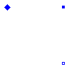
| Type | Name | Default | Description |
|---|---|---|---|
| Real | turnsRatio | Ratio stator current / excitation current |
| Type | Name | Description |
|---|---|---|
| SpacePhasor | spacePhasor_r | |
| PositivePin | pin_ep | |
| NegativePin | pin_en |
model ElectricalExcitation "Electrical excitation"
parameter Real turnsRatio(start=1)
"Ratio stator current / excitation current";
Modelica.SIunits.Current ie "Excitation current";
Modelica.SIunits.Voltage ve "Excitation voltage";
Machines.Interfaces.SpacePhasor spacePhasor_r;
Modelica.Electrical.Analog.Interfaces.PositivePin pin_ep;
Modelica.Electrical.Analog.Interfaces.NegativePin pin_en;
equation
pin_ep.i + pin_en.i = 0;
ie = +pin_ep.i;
ve = pin_ep.v - pin_en.v;
spacePhasor_r.i_ = {-ie*turnsRatio,0};
ve = spacePhasor_r.v_[1]*turnsRatio*3/2;
end ElectricalExcitation;
 Modelica.Electrical.Machines.BasicMachines.Components.PermanentMagnet
Modelica.Electrical.Machines.BasicMachines.Components.PermanentMagnet

| Type | Name | Default | Description |
|---|---|---|---|
| Current | Ie | Equivalent excitation current [A] |
| Type | Name | Description |
|---|---|---|
| SpacePhasor | spacePhasor_r |
model PermanentMagnet "Permanent magnet excitation" parameter Modelica.SIunits.Current Ie "Equivalent excitation current";Machines.Interfaces.SpacePhasor spacePhasor_r; equation spacePhasor_r.i_ = {-Ie,0};end PermanentMagnet;
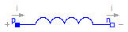
The linear inductor connects the branch voltage v with the branch current i by v = L * di/dt.
If quasiStationary == false, the electrical transients are neglected, i.e., the voltage drop is zero.
Extends from Modelica.Electrical.Analog.Interfaces.OnePort (Component with two electrical pins p and n and current i from p to n).
| Type | Name | Default | Description |
|---|---|---|---|
| Inductance | L | Inductance [H] | |
| Boolean | quasiStationary | No electrical transients if true |
| Type | Name | Description |
|---|---|---|
| PositivePin | p | Positive pin (potential p.v > n.v for positive voltage drop v) |
| NegativePin | n | Negative pin |
model InductorDC
"Ideal linear electrical inductor for electrical DC machines"
extends Modelica.Electrical.Analog.Interfaces.OnePort;
parameter Modelica.SIunits.Inductance L(start=1) "Inductance";
parameter Boolean quasiStationary(start=false)
"No electrical transients if true";
equation
v = if quasiStationary then 0 else L*der(i);
end InductorDC;
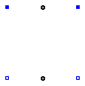
quasiStationary == false, the electrical transients are neglected, i.e., the induced excitation voltage is zero.
| Type | Name | Default | Description |
|---|---|---|---|
| Boolean | quasiStationary | No electrical transients if true | |
| Real | turnsRatio | Ratio of armature turns over number of turns of the excitation winding |
| Type | Name | Description |
|---|---|---|
| Flange_a | flange | |
| Flange_a | support | Support at which the reaction torque is acting |
| PositivePin | pin_ap | |
| PositivePin | pin_ep | |
| NegativePin | pin_an | |
| NegativePin | pin_en |
partial model PartialAirGapDC "Partial airgap model of a DC machine"
parameter Boolean quasiStationary(start=false)
"No electrical transients if true";
parameter Real turnsRatio
"Ratio of armature turns over number of turns of the excitation winding";
output Modelica.SIunits.AngularVelocity w "Angluar velocity";
Modelica.SIunits.Voltage vei
"Voltage drop across field excitation inductance";
Modelica.SIunits.Current ie "Excitation current";
Modelica.SIunits.MagneticFlux psi_e "Excitation flux";
Modelica.SIunits.Voltage vai "Induced armature voltage";
Modelica.SIunits.Current ia "Armature current";
output Modelica.SIunits.Torque tauElectrical;
Modelica.Mechanics.Rotational.Interfaces.Flange_a flange;
Modelica.Mechanics.Rotational.Interfaces.Flange_a support
"Support at which the reaction torque is acting";
Modelica.Electrical.Analog.Interfaces.PositivePin pin_ap;
Modelica.Electrical.Analog.Interfaces.PositivePin pin_ep;
Modelica.Electrical.Analog.Interfaces.NegativePin pin_an;
Modelica.Electrical.Analog.Interfaces.NegativePin pin_en;
equation
// armature pins
vai = pin_ap.v - pin_an.v;
ia = + pin_ap.i;
ia = - pin_an.i;
// excitation pins
vei = pin_ep.v - pin_en.v;
ie = + pin_ep.i;
ie = - pin_en.i;
// induced voltage across field excitation inductance
vei = if quasiStationary then 0 else der(psi_e);
// mechanical speed
w = der(flange.phi)-der(support.phi);
// induced armature voltage
vai = turnsRatio * psi_e * w;
// electrical torque (ia is perpendicular to flux)
tauElectrical = turnsRatio * psi_e * ia;
flange.tau = -tauElectrical;
support.tau = tauElectrical;
end PartialAirGapDC;
Extends from PartialAirGapDC (Partial airgap model of a DC machine).
| Type | Name | Default | Description |
|---|---|---|---|
| Boolean | quasiStationary | No electrical transients if true | |
| Real | turnsRatio | Ratio of armature turns over number of turns of the excitation winding | |
| Inductance | Le | Excitation inductance [H] |
| Type | Name | Description |
|---|---|---|
| Flange_a | flange | |
| Flange_a | support | Support at which the reaction torque is acting |
| PositivePin | pin_ap | |
| PositivePin | pin_ep | |
| NegativePin | pin_an | |
| NegativePin | pin_en |
model AirGapDC "Linear airgap model of a DC machine" extends PartialAirGapDC; parameter Modelica.SIunits.Inductance Le "Excitation inductance"; equation // excitation flux: linearly dependent on excitation current psi_e = Le * ie;end AirGapDC;
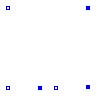
| Type | Name | Default | Description |
|---|---|---|---|
| Real | excitationTurnsRatio | Ratio of series excitation turns over shunt excitation turns |
| Type | Name | Description |
|---|---|---|
| PositivePin | pin_p | Positive pin to airgap |
| NegativePin | pin_n | Negative pin to airgap |
| PositivePin | pin_ep | Positive pin to shunt excitation |
| NegativePin | pin_en | Negative pin to shunt excitation |
| PositivePin | pin_sep | Positive pin to series excitation |
| NegativePin | pin_sen | Negative pin to series excitation |
model CompoundDCExcitation "Compound excitation = shunt + series"
parameter Real excitationTurnsRatio
"Ratio of series excitation turns over shunt excitation turns";
Modelica.SIunits.Voltage v = pin_p.v - pin_n.v;
Modelica.SIunits.Current i = pin_p.i;
Modelica.SIunits.Voltage ve = pin_ep.v - pin_en.v;
Modelica.SIunits.Current ie = pin_ep.i;
Modelica.SIunits.Voltage vse = pin_sep.v - pin_sen.v;
Modelica.SIunits.Current ise = pin_sep.i;
Modelica.Electrical.Analog.Interfaces.PositivePin pin_p
"Positive pin to airgap";
Modelica.Electrical.Analog.Interfaces.NegativePin pin_n
"Negative pin to airgap";
Modelica.Electrical.Analog.Interfaces.PositivePin pin_ep
"Positive pin to shunt excitation";
Modelica.Electrical.Analog.Interfaces.NegativePin pin_en
"Negative pin to shunt excitation";
Modelica.Electrical.Analog.Interfaces.PositivePin pin_sep
"Positive pin to series excitation";
Modelica.Electrical.Analog.Interfaces.NegativePin pin_sen
"Negative pin to series excitation";
equation
//current balances
pin_p.i + pin_n.i = 0;
pin_ep.i + pin_en.i = 0;
pin_sep.i + pin_sen.i = 0;
//compound currents
-i = ie + excitationTurnsRatio*ise;
//induced voltages
ve = v;
vse = v*excitationTurnsRatio;
end CompoundDCExcitation;
 Modelica.Electrical.Machines.BasicMachines.Components.PartialCore
Modelica.Electrical.Machines.BasicMachines.Components.PartialCore

| Type | Name | Default | Description |
|---|---|---|---|
| Integer | m | 3 | Number of phases |
| Real | n12 | Turns ratio 1:2 | |
| Real | n13 | Turns ratio 1:3 |
| Type | Name | Description |
|---|---|---|
| PositivePlug | plug_p1 | |
| NegativePlug | plug_n1 | |
| PositivePlug | plug_p2 | |
| NegativePlug | plug_n2 | |
| PositivePlug | plug_p3 | |
| NegativePlug | plug_n3 |
partial model PartialCore "Partial model of transformer core with 3 windings" parameter Integer m(final min=1) = 3 "Number of phases"; parameter Real n12(start=1) "Turns ratio 1:2"; parameter Real n13(start=1) "Turns ratio 1:3"; Modelica.SIunits.Voltage v1[m] = plug_p1.pin.v - plug_n1.pin.v; Modelica.SIunits.Current i1[m] = plug_p1.pin.i; Modelica.SIunits.Voltage v2[m] = plug_p2.pin.v - plug_n2.pin.v; Modelica.SIunits.Current i2[m] = plug_p2.pin.i; Modelica.SIunits.Voltage v3[m] = plug_p3.pin.v - plug_n3.pin.v; Modelica.SIunits.Current i3[m] = plug_p3.pin.i; Modelica.SIunits.Current im[m] = i1 + i2/n12 + i3/n13 "Magnetizing current";Modelica.Electrical.MultiPhase.Interfaces.PositivePlug plug_p1(final m= m); Modelica.Electrical.MultiPhase.Interfaces.NegativePlug plug_n1(final m= m); Modelica.Electrical.MultiPhase.Interfaces.PositivePlug plug_p2(final m= m); Modelica.Electrical.MultiPhase.Interfaces.NegativePlug plug_n2(final m= m); Modelica.Electrical.MultiPhase.Interfaces.PositivePlug plug_p3(final m= m); Modelica.Electrical.MultiPhase.Interfaces.NegativePlug plug_n3(final m= m); equation plug_p1.pin.i + plug_n1.pin.i = zeros(m); plug_p2.pin.i + plug_n2.pin.i = zeros(m); plug_p3.pin.i + plug_n3.pin.i = zeros(m);end PartialCore;
Modelica.Electrical.Machines.BasicMachines.Components.IdealCore
Extends from PartialCore (Partial model of transformer core with 3 windings).
| Type | Name | Default | Description |
|---|---|---|---|
| Integer | m | 3 | Number of phases |
| Real | n12 | Turns ratio 1:2 | |
| Real | n13 | Turns ratio 1:3 |
| Type | Name | Description |
|---|---|---|
| PositivePlug | plug_p1 | |
| NegativePlug | plug_n1 | |
| PositivePlug | plug_p2 | |
| NegativePlug | plug_n2 | |
| PositivePlug | plug_p3 | |
| NegativePlug | plug_n3 |
model IdealCore "Ideal transformer with 3 windings" extends PartialCore; equation im = zeros(m); v1 = n12*v2; v1 = n13*v3;end IdealCore;
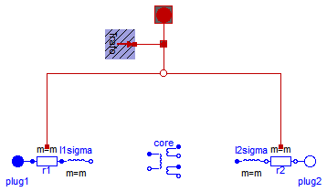
Extends from Machines.Interfaces.PartialBasicTransformer (Partial model of threephase transformer).
| Type | Name | Default | Description |
|---|---|---|---|
| Real | n | Ratio primary voltage (line-to-line) / secondary voltage (line-to-line) | |
| Boolean | useThermalPort | false | Enable / disable (=fixed temperatures) thermal port |
| Operational temperatures | |||
| Temperature | T1Operational | Operational temperature of primary resistance [K] | |
| Temperature | T2Operational | Operational temperature of secondary resistance [K] | |
| Nominal resistances and inductances | |||
| Resistance | R1 | Primary resistance per phase at TRef [Ohm] | |
| Temperature | T1Ref | Reference temperature of primary resistance [K] | |
| LinearTemperatureCoefficient20 | alpha20_1 | Temperature coefficient of primary resistance at 20 degC [1/K] | |
| Inductance | L1sigma | Primary stray inductance per phase [H] | |
| Resistance | R2 | Secondary resistance per phase at TRef [Ohm] | |
| Temperature | T2Ref | Reference temperature of secondary resistance [K] | |
| LinearTemperatureCoefficient20 | alpha20_2 | Temperature coefficient of secondary resistance at 20 degC [1/K] | |
| Inductance | L2sigma | Secondary stray inductance per phase [H] | |
| Type | Name | Description |
|---|---|---|
| PositivePlug | plug1 | Primary plug |
| NegativePlug | plug2 | Secondary plug |
| ThermalPortTransformer | thermalPort |
partial model BasicTransformer "Partial model of threephase transformer" extends Machines.Interfaces.PartialBasicTransformer; //dummy will be removed when conversion script is applicableend BasicTransformer;